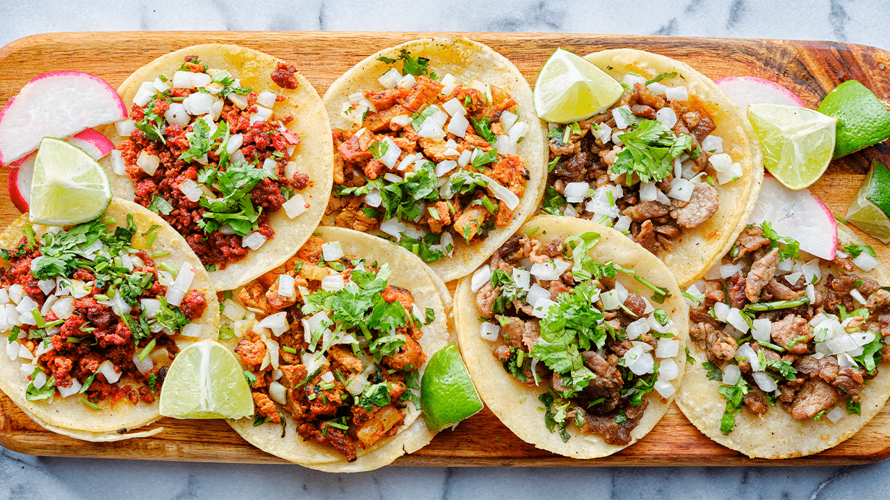
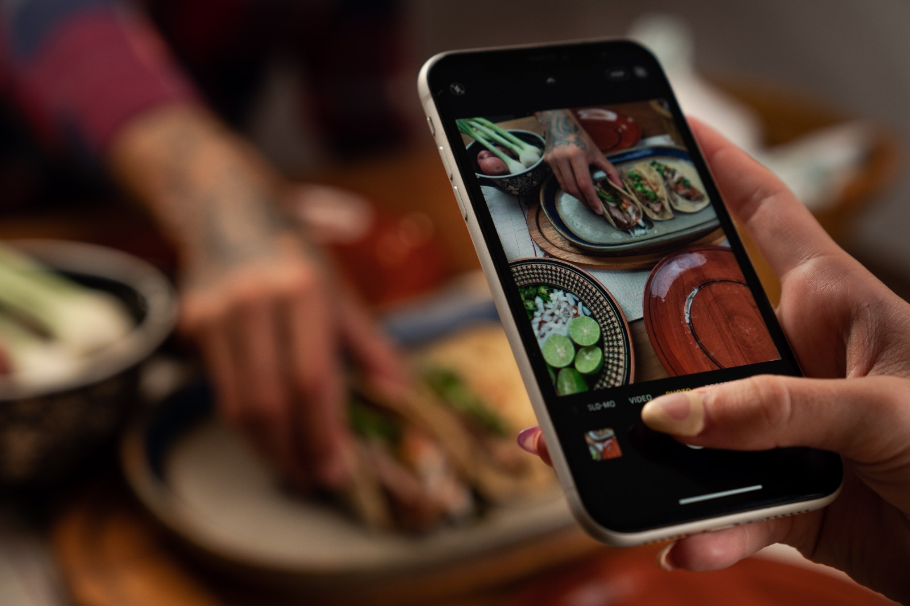
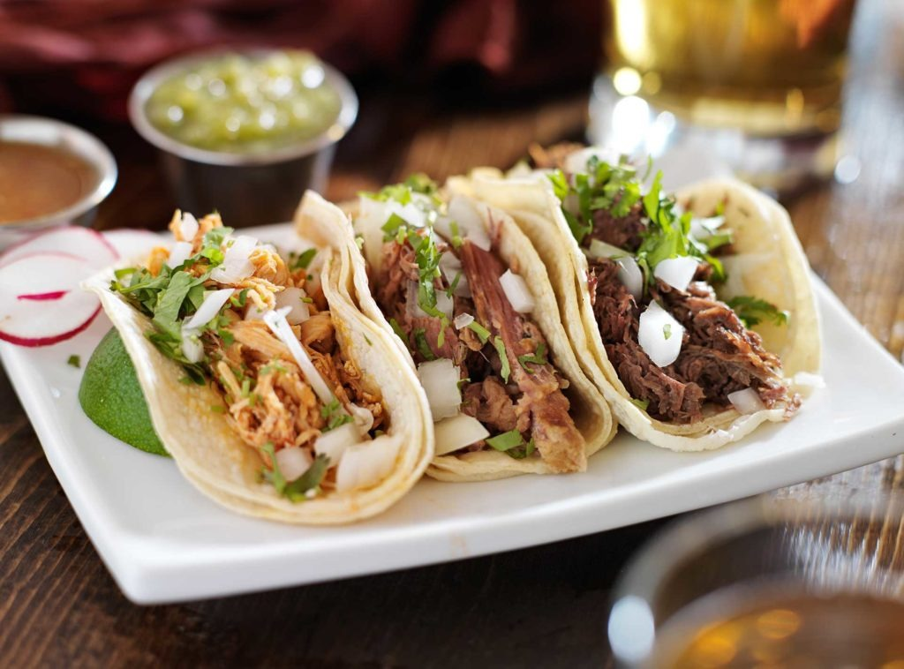
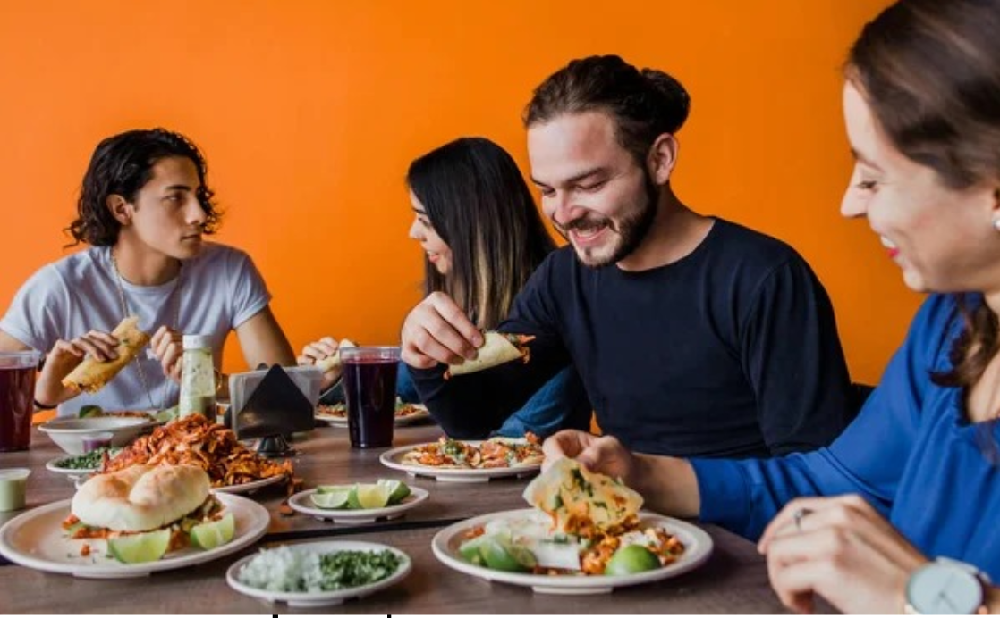
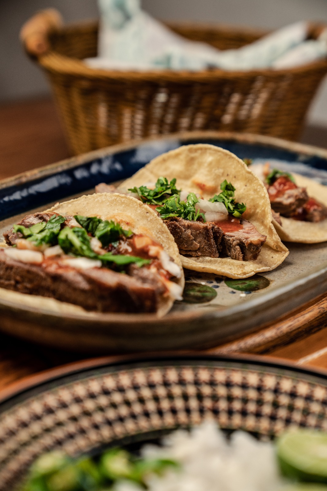
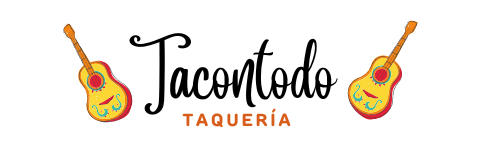

{% extends "base.html" %}
{% block content %}

Sobre Nosotros

¿Quienes somos?
¡Bienvenidos a Tacontodo!
Somos una taquería dedicada a ofrecer la mejor experiencia gastronómica a nuestros clientes. Desde el año 2000,
nos hemos especializado en la elaboración de auténticos tacos mexicanos, utilizando recetas tradicionales y los
ingredientes más frescos.
En Tacontodo, nos enorgullece la calidad de nuestros platillos y el servicio que brindamos a nuestros clientes.
Nos aseguramos de que cada taco que servimos sea una deliciosa combinación de sabores y texturas, desde la suave
tortilla hasta la carne jugosa y bien sazonada.
Nuestra pasión por la cocina mexicana se refleja en cada aspecto de nuestro negocio, desde la decoración de nuestro
local hasta la selección de nuestros proveedores. Nos esforzamos por mantener los más altos estándares de calidad
en todo lo que hacemos.
¡Gracias por elegir Tacontodo! Esperamos verte pronto en nuestro local para que puedas disfrutar de la auténtica
comida mexicana que tanto amamos y que tanto nos enorgullece.
Servicios

En Tacontodo, nos dedicamos a brindar a nuestros clientes la
mejor experiencia culinaria mexicana. Además de ofrecer deliciosos tacos y platillos tradicionales, también
ofrecemos una variedad de servicios para satisfacer las necesidades de nuestros clientes.En Tacontodo,
nos esforzamos por brindar a nuestros clientes la mejor experiencia culinaria posible, desde la calidad de
nuestra comida hasta la atención al cliente y los servicios que ofrecemos. ¡Esperamos verte pronto en nuestro
local o en tu próximo evento!
Consumidores

En Tacontodo, nuestros clientes son la razón de ser de nuestro negocio. Nos enorgullece tener una amplia base de
consumidores leales y satisfechos que aprecian la autenticidad y la calidad de nuestra comida y servicios.
Nuestros clientes provienen de todas las edades, géneros y orígenes. Desde jóvenes estudiantes que buscan una comida
rápida y sabrosa, hasta parejas mayores que desean disfrutar de una cena romántica, en Tacontodo, todos son bienvenidos.
Además, muchos de nuestros clientes son amantes de la cultura mexicana y la comida tradicional, y aprecian nuestra
dedicación a la autenticidad y la calidad. Nos enorgullece ser parte de la comunidad mexicana y compartir nuestra
cultura y comida con aquellos que aprecian y respetan nuestras raíces.
¡Gracias por ser parte de nuestra comunidad de consumidores y esperamos verte pronto en Tacontodo!
Historia

La historia de Tacontodo comenzó hace más de 20 años cuando nuestro fundador, decidió seguir su pasión por la comida
mexicana y abrir su propia taquería en el corazón de la ciudad. Desde el primer día, Juan se propuso ofrecer a sus
clientes la mejor comida auténtica mexicana y la atención al cliente más excepcional.
En sus primeros años, la taquería era pequeña y modesta, pero gracias al sabor y la calidad de la comida y el servicio,
pronto se ganó una reputación en la ciudad y comenzó a atraer a más y más clientes. Juan se enorgullecía de ofrecer la
auténtica comida mexicana, desde los ingredientes frescos hasta las recetas tradicionales transmitidas por generaciones.
Con el tiempo, la taquería creció y se expandió, y el creador decidió abrir más sucursales en diferentes partes de la ciudad.
Pero a pesar de su éxito, nunca perdió su enfoque en la autenticidad y la calidad de la comida y el servicio. En cada
sucursal, el personal de Tacontodo sigue dedicado a brindar a los clientes la misma experiencia excepcional que Juan
ofreció desde el principio.
Hoy en día, Tacontodo es una de las taquerías más populares de la ciudad, y seguimos comprometidos a ofrecer a nuestros
clientes la mejor experiencia culinaria mexicana posible. Agradecemos a nuestros clientes por su lealtad y apoyo a lo
largo de los años, y esperamos seguir siendo un pilar de la comunidad mexicana y de la gastronomía en la ciudad.
Nuestra filosofia
Nuestra Mision
En Tacontodo, nuestra misión es simple: ofrecer a nuestros clientes la mejor experiencia culinaria mexicana posible.
Nos esforzamos por lograr esto al brindar platillos auténticos y de alta calidad, servicio excepcional y un ambiente
acogedor y amigable.
Además, nuestra misión también incluye ser un negocio responsable y sostenible. Nos aseguramos de utilizar productos
locales y de temporada siempre que sea posible, y nos esforzamos por reducir nuestro impacto ambiental al utilizar
prácticas de cocina y embalaje ecológicas.
En Tacontodo, nuestra misión es proporcionar una experiencia culinaria auténtica y de alta calidad a nuestros clientes
mientras mantenemos nuestros valores de responsabilidad social y sostenibilidad. Agradecemos a nuestros clientes por su
apoyo y esperamos seguir siendo un destino culinario favorito en la ciudad.
Nuestra Vision
En Tacontodo, nuestra visión es ser reconocidos como el mejor destino para disfrutar de la auténtica comida
mexicana en la ciudad. Nos esforzamos por lograr esto al mantener nuestros altos estándares de calidad y servicio,
y al innovar constantemente nuestra oferta de platillos y servicios.
Pero nuestra visión no se trata solo de crecimiento y reconocimiento. También creemos en ser un negocio responsable
y sostenible, y queremos ser un ejemplo en nuestra industria al implementar prácticas y políticas éticas y sostenibles.
En última instancia, nuestra visión es proporcionar una experiencia culinaria excepcional y auténtica a nuestros
clientes, mientras compartimos la cultura y tradiciones mexicanas. Agradecemos a nuestros clientes por su apoyo
y esperamos seguir sirviéndoles lo mejor de nuestra cocina y servicio.
Nuestros valores
Nuestro mapa de sitio

{% endblock %}